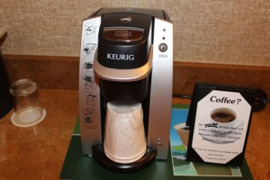

灼熱のラスベガス旅行初日
８月上旬、土曜の早朝に自宅をでて、ラスベガスに着いたのは午前１１時。フライトはデルタ航空。
デルタ航空から誕生日にDELTA VACATIONで使える１００ドルOFFのコードが送られてきたのがきっかで、初めてDELTA VACATIONを利用してみた。飛行機とホテルのセットをデルタ航空のウエブサイトから直接購入。
ラスベガスに着き、空港の外にでてから一番初めに目に留った、SHOW TIMEというシャトルバスのブースで往復チケットを買う。帰りのフライトの日時を聞かれたので教えると、その場で帰りの空港までのシャトルバスのチケットも発行してくれた。私たちの泊まるRIOは少し遠いらしく、料金は高めで往復一人１７ドル。
指示された番号のところでシャトルバスがくるのを待つ。MCCARRAN空港はWIFIが無料で、建物の外とはいえ接続できたのでiPadでメールチェック。そのうちバスがきて、他に３組ほど乗客が集まったところでシャトルバスは空港を出発。午前１１時５５分。さっそく、外気の暑さには驚いた。完全に陰になっている、直射日光のあたらないところでバスを待っていたのだが、すごく暑い。そしてバスのなかはすごく寒く、さきほど脱いだばかりのカーディガンを羽織った。
土曜の午後。シャトルバスがストリップにさしかかると、大渋滞。全然進まない。このとき、シャトルバスは高いとおもっていたのが、シャトルバスにしてよかったと心底おもった。タクシーだったら、全然進まなくて、メーターだけが加算されていらいらしていたところだろう。
幸い時間はたっぷりあるので、車上から観光気分でストリップの様子や距離感が把握できた。予想どおり、私たちは最後にシャトルを降りた。空港はストリップに驚くほど近かったのに、だいぶ時間がかかった。１２時３０分、RIO ALL SUITE RESORT着。
チェックインにはすでに列ができていて列に並ぶ。午後１時、４時のチェックインのところアーリーチェックインさせてくれた。
部屋はALL SUITEというだけあって広々して快適だった。
⬇アメニティーはコンディショナーインシャンプーと石けん、ボディークリーム。
冷蔵庫は、有料の飲み物がぎっしり詰まった冷蔵庫と、空のものと二つある。この、飲み物が詰まった冷蔵庫は、表に注意書きがあって、動かすと料金が徴収されるようなことが書いてある。そんなわけないだろうとおもっていたが、実際は外見からは想像つかないほどハイテクな仕組みになっていて、要するに重さを感知するようになっているのだ。飲まなくても、手に取るだけでフロントには情報がいくようになっている。後にチェックアウトしたときに、動かしたでしょ？と聞かれ、びっくり。
コーヒーメーカーはKEURIG。

専用のポッド⬇（家にあったサンプルでもらったものを持ってきていた）が必要。
個包装になっているだけあって味はおいしいのだが、これが有料。しかも３杯で８ドル。ストリップにあるWALLGREENでは１２個で９ドルくらいで売っている。私はコーヒーはデカフェしか飲まないので、後にストリップのセブンイレブンでティーバッグを買い、ポッドをセットせずにお湯だけおとして紅茶を飲んでいた。
さて、荷物を置いたあとは、ホテル内を探検。
カジノフロアにもどり、プールを探すが広大なフロアは、週末のせいか人が多く、暗くてごちゃごちゃしていてどこに何があるのだか、従業員に聞いても全然わからない。
やっとプールにたどり着くと、それは驚愕の暑さだった。当初、ラスベガスに来たのは午後はのんびりプールで過ごすことを想定してて、ストリップから離れているものの砂浜があるRIOを選んだ。しかし、これでは、日陰にいても暑すぎてのんびり快適にプールサイドで本を読んだり、うたた寝などとてもではないができない（してるひともいたけど）。ラスベガスの夏の暑さを甘くみていたことに気づく。同じ暑さでも、海辺のそれとは全く違うのだった。
時計は２時を過ぎていて、気をとりなおし、ランチを食べようとホテルのホームページで調べておいたインド料理のレストランを探す。が、みつからない。コンシェルジュに聞いてみると、閉店してしまったと素っ気なく教えられる。
そしてしばらくどこで食べようかと再び広いカジノフロアをさまよい、新しくできた中華の店、KJ Dim Sum & Seafoodに入ってみた。広い店内は働くひとも客も皆中国人。まるで中国にきたかのよう。ワゴンでサービスされる飲茶をやっていて、おいしくてここは気に入った。
その後TOTAL REWARDSのカウンターでカードを作る。パスポートを見せ、用紙に記入するとその場で名前入りのカードを発行してくれる。これで、カジノで遊ぶとポイントもつくだけでなく、３日後にはホテル内のレストランで使える１０ドル分のクレジットがもらえるのだ。
それからチェックインしたときにもらるはずだった、⬇TOTAL VEGAS COUPON BOOK
をフロントにもらいに行った。相変わらず列に並ぶ。
チェックインしたとき⬇のクーポンの冊子しかもらえなかったのだ。
これはあまり使えないが、TOTAL VEGAS COUPON BOOKはグランドキャニオンのツアーが半額になったりする予約時の特典の一つだったのだ。
そして一旦部屋にもどり休憩。J次郎爆睡。
７時近く、次の日の日曜のグランドキャニオンのツアーを予約しにカジノフロアの公衆電話へ。回線が悪いのか、何度も電話が切れてしまい根気よく何度もかけなおしやっと予約ができた。相当時間がかかった。
さらにシルクドソレイユのショー、O（オー）の予約を試みるも、やはり何度もかけなおした挙げ句、月曜から休演ですでにそれまでのチケットはソールドアウトだった。
長蛇の列のここのホテルのメインのブッフェレストランの前を通り過ぎ、ストリップへのシャトルバス乗り場へ。バスはなかなかこなかった。やっときたとおもったら、私たちは立って列に並んでいたのに後ろのほうで座って待っていた人たちが割り込み、私たちの直前の夫婦の前まででいっぱいになり、乗り切れず。
やっとストリップに着いたのは９時過ぎだった。何をするにも時間だけが無駄にすぎていくのを感じていた。
BALLY'Sでシャトルバスを降り、向かいのBILL'Sへ。
BILL'SはRIOとは違ってレトロな感じで小さいが、それでも広い。
PLAYERS CLUBのカウンターへ行き、パスポートを見せ、PLAYERS CARDを作ってもらう。カードを作ると、RIOを含むHARRAH'S系列のホテルのレストランで使える５ドル分のクレジットがもらえるのだ。このクレジットはすぐに加算された。とりあえず使えるレストランの一覧表をもらい、どこのレストランで使うか検討することにする。
BILL'SをでてMIRACLE MILE SHOPSまで歩く。ストリップはすごいひとだった。暑さは夜になっても暑いが、陽射しがないぶんまだ歩ける。MIRACLE MILE SHOPSは広く、かなり疲れていたのでABCマートにだけ寄って、スナックとビールを買う。
せっかくなので、J次郎はSIERRA NEVADAというビールを買ってみる。
その後ベラッジオで噴水ショーに圧倒され、BALLY'Sまでもどり、シャトルバスでホテルへ戻った。
ホテルに着いたのは１１時半。
RIOの目玉のショーの最終回に間に合わなかった。
事前に調べた地球の歩き方のウエブサイトにはショーは木〜日となっていたので、この時点で、水曜の夜にラスベガスを発つ私たちは、滞在しているホテルの（地球の歩き方で）必見といわれている無料のショーを見逃したことはまだ知らなかった。
２日目へ続く。